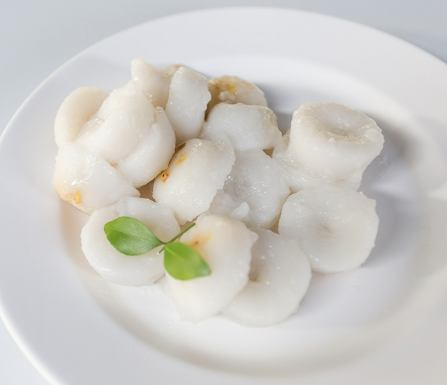

|
1.ปลาคก (ปลาตะเพียนน้ำเค็ม)
อาหารประจำถิ่นของชาวชลบุรี ส่วนประกอบทำจากปลาตะเพียน น้ำเค็มที่ค่อนข้างหายากต้มกับผักกาดดอง ตะไคร้ กระเทียม พริกแห้งและเกลือ ใส่ปลาไว้บนสุด เคี่ยวบนไฟอ่อนๆ รวมกันกับ น้ำเป็ดพะโล้ ส่วนมากทานกับข้าวต้มหรือข้าวสวยร้อน ๆ จุดเด่น นอกจากความอร่อยของปลากับผักดองแล้ว ยังเป็นก้างที่นิ่มจนเคี้ยว กินได้ทั้งก้างเลย สามารถหาลิ้มลองได้เฉพาะบางพื้นที่เท่านั้น
โดยมีชื่อเสียงในตำบลบางปลาสร้อยร้านดังในเรื่องปลาคก คือร้าน ข้าวเป็ดท่าเกวียน ลิ้มย่งเฮง
ขอบคุณภาพจาก : travelkanuman
|
|
2.ขนมหน้าหมู
อาหารว่างประจำเมืองชลบุรี นิยมทำกันใช้ในงาน บุญ ต่าง ๆ เช่น งานทำบุญขึ้นบ้านใหม่ หรือ งานบวช ส่วนประกอบก็มี หมูสับ ถั่วลิสงคั่วบด ใบหอมโรยหน้าถ้วย ตัวแป้งทำจาก แป้ง ข้าวเจ้า แป้งมัน น้ำตาลทราย หรือน้ำตาลมะพร้าว ผสมให้ เข้ากัน ใส่ถ้วยตะไลนำไปนึ่งประมาณ 15-20 นาที ขนมมีรส ชาติหวานมัน เป็นขนมที่ทำเฉพาะถิ่น ปัจจุบันหาซื้อ ค่อนข้างยาก เพราะไม่ค่อยมีคนทำกันแล้ว อาจจะสามารถ หาซื้อได้เป็นบางวันที่ตลาดชลบุรีหรือตลาดพนัสนิคม
ขอบคุณภาพจาก : travelkanuman
|
|
3.แจงลอน
อาหารพื้นบ้านของชาวชลบุรี เป็นอาหารคาวคล้าย ๆ ห่อหมก และเครื่องปรุงก็เหมือนกับห่อหมก ต่างกันตรงห่อหมกใส่กะทิ และมีผักต่างๆ เช่น ใบยอ ผักกาด ใบโหระพา แต่แจงลอนจะใส่
มะพร้าวขูดที่ไม่ต้องคั้นกะทิออก และไม่ใส่ผักเหมือนห่อหมก ฉะนั้นส่วนประกอบทั้งหมดก็จะเป็นน้ำพริก ผสมกับเนื้อปลา และมะพร้าวขูด นำมาปั้นเป็นก้อนกลมๆ เสียบไม้ย่าง กลิ่นหอม
ขอบคุณภาพจาก : travelkanuman
|
|
4.ข้าวเกรียบอ่อน
ขนมหวานที่ดูไปก็คล้ายข้าวเกรียบปากหม้อ เพราะเป็นแห้งห่อ ไว้เหมือนกัน แต่แตกต่างกันที่ส่วนผสมที่ทำจากแห้งมันสำปะหลัง แป้งท้าวยายม่อมเป็นสี่เหลี่ยม ไส้ในเป็นน้ำตาลปี๊บ น้ำตาลทราย มะพร้าวขูด น้ำตาลดอกมะลิ เกลือและเทียนอบรสชาติหวานมันอร่อย กรุบ ๆ ที่เนื้อมะพร้าว ข้อดีอีกข้อคือเป็นคำ ๆ กินง่าย เหมาะทำเป็น อาหารว่างรูปร่างสวยงาม สามารถหาซื้อได้ทั่วไปในชลบุรีทั้ง ตลาดสด ตลาดอ่างศิลา ตลาดน้ำสี่ภาค ตลาดหนองมน ตลาดเมือง
ขอบคุณภาพจาก : travelkanuman
|
|  |
5.ขนมก้นถั่ว
ขนมก้นถั่ว เมืองชลบุรี มีถั่วทองใส่ไว้ที่ก้นถ้วย ตัวแป้งเหมือน ขนมหน้าหมู รสชาติหวานมัน โดยส่วนผสมก็ตามชื่อขนม คือ ขนมหน้าถั่ว มีถั่วทอง (ถั่วเขียวผ่าซีก) ปิดหน้าถ้วย นิยมทำ
รับประทานในช่วงงานทำบุญตามชุมชนต่าง ๆ เช่นกัน โดยแบบหน้าถั่วจะหากินได้ง่ายกว่าเพราะมีรสหวานมัน เหมาะเป็นของหวานและกินง่ายกว่า
ขอบคุณภาพจาก : travelkanuman
|